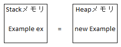
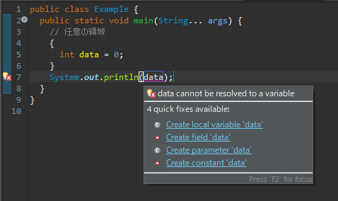
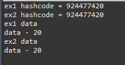
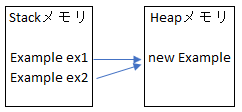
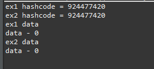
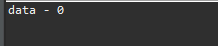
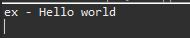
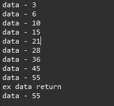

[Java] 10. メモリの割り当て(stackメモリとheapメモリ、そしてnew)とCall by reference(ポインタによる参照)
こんにちは。明月です。
この投稿はメモリの割り当て(stackメモリとheapメモリ、そしてnew)とCall by reference(ポインタによる参照)に関する説明です。
以前の投稿でクラスについて説明したことがあります。
link - [Java] 7. クラスを作成する方法(コンストラクタを作成方法)
Javaで変数を使う時、原始データタイプ(Primitive type)ではなければすべてのタイプはnewで割り当てします。
例えば、文字列タイプのStringを使う時に、我々はString a = "hello world"と使いますが、内部的には String a = new String("hello world");と同じく処理が行います。
つまり、Javaでは原始データタイプ(Primitive type)以外はすべてがクラスタイプになっております。
クラスを使う時にはnewというキーワードを使います。
// クラス
public class Example {
// メンバー変数
private int data;
// コンストラクタ
public Example(int data) {
// データ
this.data = data;
}
// 出力関数
public void print() {
// コンソール出力
System.out.println("data - "+ this.data);
}
// 実行関数
public static void main(String... args) {
// クラス割り当て(インスタンス生成)
Example ex = new Example(10);
// 出力
ex.print();
}
}
上の例は当たり前ですが、我々が確認しなければならない部分はExample ex = new Example(10);の部分です。
イコールの前のExample exの部分は変数宣言です。ここで私がExample ex = 10;に作成すればエラーが発生します。なぜなら、Example exにはintタイプではなくExampleタイプのインスタンスだけ格納するのでです。
つまり、Javaの内部ではExample ex = new Example(10);に作成すると下記のイメージみたいにメモリ構造が生成されます。

ここでStackメモリとHeapメモリにの構造について説明が必要です。
Stackメモリは我々がプログラムを作成する時に、実行する領域を中括弧({})で作成します。この中括弧を我々はStack領域といいます。つまり、Stack領域で宣言した変数はStackメモリに格納されるんだと思えば良いです。

上のイメージを見るとmain関数の中で任意の中括弧を作成して新しいStack領域を作りました。その新しい領域で宣言したdataはStack領域を外れて使えません。
また、元に戻ってExample exはStack領域で宣言した変数です。
new Example(10)の場合はHeap領域で割り当てしたことです。Heap領域というのはプログラムのメモリ領域ですが、プログラムが実行すればHeapメモリが生成してその中でいくらでもクラスを割り当てするし解除することができます。
でも、このHeap領域というのはStack領域みたいに宣言する時に何処で割り当てたかは分からないです。そのため、Heapで宣言したnew Exampleのアドレス値をStackメモリのExample exに格納することです。
改めてまとめるとStackとは静的メモリ領域としてデータを探しやすい(Stackアルゴリズムでpush popでデータを探す)ですが、Heapは動的メモリ領域でnewキーワードでクラス割り当て(インスタンス生成)する時のアドレス値だけで探すことができます。
そしてその構造を連結したことがExample ex = new Example(10);の形です。
なぜJavaではこんな複雑なStack=Heapの構造でデータを扱うことか？
実はこの概念はC/C++から来た概念です。C/C++ではnewを使わなく、クラスをStack領域で割り当てることができます。原始データタイプ(Primitive type)みたいにです。
でも、このStackメモリが無限にあることではなく、プログラムによって決めています。普通は1MBや2MBほどです。
このメモリのサイズはintタイプが4byteですが、約25万個ほど宣言ができるサイズです。25万個だと言えば大きいと思いますが、実はすぐ使える数値です。
また、Stackメモリでは変数宣言だけあることではなく、関数状況(Interrupt)などプログラ上で色々ことに使うことが多いです。それを考えばStackメモリの量は多いって思わないです。
最近のプログラムを実行すると基本何GBも簡単に超えることを見えますが、1MBはすごく少ないことです。Stackに割り当てているメモリをすべて使うとStackOverflowが発生します。
そうするとStackメモリ設定を大きくすればいいじゃないかと思えます。その通りにStackメモリサイズを大きくすればStackOverflowは解決できます。でも、Stackメモリは構造がStackアルゴリズムでPushとPopでデータを探します。
その意味はメモリが大きくなるほどアルゴリズム効率は落ちるので遅くなります。Stack構造ではなくても探索アルゴリズムになっているデータ構造(data structure)は大きくなると遅くなります。
すなわち、Stackメモリを大きく設定するとプログラムを遅くなります。
HeapはStackみたいに整形化になっているデータ構造ではないのでサイズが大きくなってもプログラムが遅くなることではありません。でもHeapにあるデータを参照するまてには必ずメモリアドレス値を知るべきですが、そのデータをStack領域で格納することです。
Javaではそのアドレス値を確認するデータがhashcodeです。
JavaではすべてのクラスがObjectクラスを継承しています。
このObjectクラスは基本的に９個の関数がありますが、その意味はJavaで使う原始データタイプ(Primitive type)以外のすべてのクラスはすべて下記の９個の関数を持っていることの意味です。
link - https://docs.oracle.com/javase/7/docs/api/java/lang/Object.html
| 関数 | 説明 |
|---|---|
| protected Object clone() | オブジェクトを複製する。(別のインスタンスになる。単純にポインタコピーではない。) |
| boolean equals(Object obj) | 該当なオブジェクトと比較して同じならtrue、違うならfalseをリターン |
| protected void finalize() | デストラクタと似ている関数でガベージコレクション(GC)でポインタがないことを確認する時に呼び出す。 |
| int hashCode() | オブジェクトのハッシュコードをリターン |
| String toString() | オブジェクトの文字列をリターン |
| Class getClass() | オブジェクトのクラスタイプをリターン |
| void notify() | モニターで待機中の一つのスレッドを再開する。 |
| void notifyAll() | モニターで待機中のすべてのスレッドを再開する。 |
| void wait() | notifyとnotifyAllが呼び出せる時までスレッド待機 |
| void wait(long timeout) | notifyとnotifyAllが呼び出せる時か指定している時間までスレッド待機 |
| void wait(long timeout, int nanos) | notifyとnotifyAllが呼び出せる時か他のスレッドが割り込み、指定している時間までスレッド待機 |
notifyとwaitの場合はスレッドを説明する時に確認しましょう。getClassとcloneはクラスのReflectionまたはデザインパターンを説明する時に確認しましょう。
また、hashCode、toString、equalsに関しても説明が多いので別の投稿で説明します。
一応、オブジェクトを区分するためにhashCodeの関数を確認しましょう。
このハッシュコードはクラスのアドレス値をハッシュアルゴリズムで格納したことです。ハッシュアルゴリズムはデータを区分するためにデータを圧縮してバイナリに格納したことだと思えば良いです。(この投稿は何か説明しようと思えばアルゴリズムの話が多いですね。)
また、上のExampleインスタンスを生成して他の変数にコピーします。
// クラス
public class Example {
// メンバー変数
private int data;
// コンストラクタ
public Example(int data) {
// データ
this.data = data;
}
// データ設定
public void setData(int data) {
// データをメンバー変数に格納
this.data = data;
}
// 出力関数
public void print() {
// コンソール出力
System.out.println("data - " + this.data);
}
// 実行関数
public static void main(String... args) {
// Exampleインスタンス生成
Example ex1 = new Example(10);
// ex1変数の値をex2変数に格納する。
Example ex2 = ex1;
// hashcode出力
System.out.println("ex1 hashcode = " + ex1.hashCode());
System.out.println("ex2 hashcode = " + ex2.hashCode());
// ex2のインスタンスのdataを修正すれば
ex2.setData(20);
// ex1のdataをコンソール出力
System.out.println("ex1 data");
ex1.print();
// ex2のdataをコンソールに出力
System.out.println("ex2 data");
ex2.print();
}
}

上のソースを見ればex1にはnewキーワードでインスタンスを生成しました。そしてex2の変数にex1を格納しました。
hashCodeでアドレス値を確認すれば同じ値が出力します。つまり同じクラスということです。
そしてex2のdataを修正します。
結果はex1とex2は同じデータが出力します。

つまり、上のイメージみたいにStack変数とHeapのインスタンスの構造が設定されています。ex1変数とex2変数はheap領域で同じインスタンスを指しているので、ex2の値を修正してもex1が指しているクラスには影響があることです。
StackとHeapの構造はこれだけです。これをしっかり理解すれば基本メモリ構造理解は問題ないです。
次は初心者が現場でよくするミスです。
// クラス
public class Example {
// 変数
private int data;
// コンストラクタ
public Example(int data) {
setData(data);
}
// メンバー変数値を設定
public void setData(int data) {
this.data = data;
}
// 出力関数
public void print() {
// コンソール出力
System.out.println("data - " + this.data);
}
// クラスを初期化する関数
public static Example initClass(Example ex) {
// 値を初期化
ex.setData(0);
// パラメータリターン
return ex;
}
// 実行関数
public static void main(String... args) {
// Exampleインスタンス生成
Example ex1 = new Example(10);
// ex2変数にex1クラスを初期化して格納
Example ex2 = initClass(ex1);
// hashcode出力
System.out.println("ex1 hashcode = " + ex1.hashCode());
System.out.println("ex2 hashcode = " + ex2.hashCode());
// ex1のdataをコンソールに出力
System.out.println("ex1 data");
ex1.print();
// ex2のdataをコンソール出力
System.out.println("ex2 data");
ex2.print();
}
}

上のソースを見ればExample ex1クラスをinitClass関数に渡して値を0に設定してex2の変数に格納しました。
ここでex1とex2は別の関数かと見れば、hashCodeが同じなので同じクラスです。つまり、ex1のdata値も0に初期化になります。
初心者がクラスをパラメータに渡ると別のクラスになると勘違いしますが、newを使うことではないので同じクラスです。
その後にそのパラメータの値をそのままにリターンしたので同じクラスになります。
// クラス
public class Example {
// 変数
private int data;
// コンストラクタ
public Example(int data) {
setData(data);
}
// メンバー変数値を設定
public void setData(int data) {
this.data = data;
}
// 出力関数
public void print() {
// コンソール出力
System.out.println("data - " + this.data);
}
// クラスを初期化する関数
public static void initClass(Example ex) {
// 値を初期化
ex.setData(0);
}
// 実行関数
public static void main(String... args) {
// Exampleインスタンス生成
Example ex1 = new Example(10);
// ex1の値を初期化
initClass(ex1);
// ex1の値を出力
ex1.print();
}
}

main関数だけみればex1のdataのデータ修正がありません。initClass関数のなかでsetDataをします。
つまり、リターンを使わなくてもクラスの中のデータを変更することができます。
初心者がよくミスするところですが、同じStack領域でデータ修正がなくてもデータが変更ができます。(たまに、後輩から質問がデバッグ中で特定関数を呼び出すでクラス値が変更されます。Javaのバグではないでしょうか？と聞けば怒ります。)
これがJavaのCall by reference(ポインタによる参照)です。
でも、クラスなのでCall by referenceの例外があります。
原始データタイプとそのクラスデータ、StringはCall by value(値による参照)になります。
// クラス
public class Example {
// 文字列初期化
public static void initString(String ex) {
// 初期化
ex = "";
}
// 実行関数
public static void main(String... args) {
// 文字列宣言
String ex = "Hello world";
// 初期化
initString(ex);
// コンソール出力
System.out.println("ex - " + ex);
}
}

StringデータをinitString関数に渡ってもデータが変わらないです。実はinitStringでイコール(=)で再割当したことだからmainのex変数とinitStringのex変数は別のポインタデータになります。
ここでJavaのCall by referenceをしっかり理解すればchainメソッドパターンを作成することができます。
// クラス
public class Example {
// 変数
private int data;
// コンストラクタ
public Example(int data) {
// メンバー変数を設定
this.data = data;
}
// 足す関数
public Example sum(int data) {
// メンバー変数に値を足す。
this.data += data;
// コンソール出力
return print();
}
// 出力関数
public Example print() {
// コンソール出力
System.out.println("data - " + this.data);
// 自分のポインタをリターン
return this;
}
// 実行関数
public static void main(String... args) {
// Exampleインスタンス生成
Example ex = new Example(1);
// sum関数にはprint関数を呼び出す。print関数には自分のポインタをリターンする。
// つまり、ex.sum(2)、ex.sum(3)とみたいな効果のchainメソッドパターンが実装される。
ex.sum(2).sum(3).sum(4).sum(5).sum(6).sum(7).sum(8).sum(9).sum(10);
// コンソール出力
System.out.println("ex data return");
// 結果出力
ex.print();
}
}

最近のプログラムトレンドが前のオブジェクト指向(OOP)から関数指向のスタイルで変わりました。この時にcallback関数やchainメソッドパターン形の実装スタイルがあります。それを理解して様々なところで応用すればよいと思います。
ここまでメモリの割り当て(stackメモリとheapメモリ、そしてnew)とCall by reference(ポインタによる参照)に関する説明でした。
ご不明なところや間違いところがあればコメントしてください。
- [Java] 抽象クラス2019/08/27 19:05:44
- [Java] インタフェース2019/08/26 23:40:29
- [Java] 15. 列挙型(バイナリデータビット演算子の使用例)2019/08/23 19:46:10
- [Java] 14. オブジェクト指向プログラミング(OOP)の4つ特性(カプセル化、抽象化、継承、多相化)2019/08/22 20:08:37
- [Java] 13. 抽象クラス(abstract)と継承禁止(final)2019/08/22 00:06:20
- [Java] 12. インタフェース(interface)2019/08/20 23:46:23
- [Java] 11. StringのhashCodeとequals、そしてtoStringの再定義(override)2019/08/20 00:42:04
- [Java] 10. メモリの割り当て(stackメモリとheapメモリ、そしてnew)とCall by reference(ポインタによる参照)2019/08/07 20:53:34
- [Java] 9. アクセス修飾子とstatic2019/08/06 20:22:48
- [Java] 8. クラスの継承とthis、superキーワードの使い方2019/08/05 23:22:58
- [Java] 7. クラスを作成する方法(コンストラクタを作成方法)2019/08/02 22:45:42
- [Java] 6. 関数の使い方(関数のオーバーロードと再帰的な方法について)2019/08/01 20:40:40
- [Java] 5. 配列とリスト(List)、マップ(Map)の使い方2019/07/26 23:25:58
- [Java] 4. 制御文2019/07/25 23:37:36
- [Java] 3. 演算子2019/07/25 23:38:36
- [Bootstrap] HTMLデザインのフレームワークのBootstrap紹介2020/07/30 19:06:36
- [Python] メール(smtplib)を送信する方法2020/07/27 18:38:43
- [Python] HttpConnection(requestsモジュール)でウェブサーバーで接続する方法2020/07/20 14:41:51
- [Python] Excel(openpyxl)を扱う方法2020/07/16 16:40:31
- [Python] ファイル圧縮、解凍(zipfile)する方法2020/07/14 19:14:22
- [Python] Apache cgiでPythonを使う方法2020/07/09 19:58:19
- [Python] Web serverを起動する方法(http.server)2020/07/09 00:13:13
- [Python] WebSocketを使う方法2020/07/07 17:29:18
- [Python] PythonとJavaのソケット通信する方法2020/07/03 18:35:50
- [Python] PythonとC#のソケット通信2020/07/01 19:28:22
- [Python] INI(環境設定ファイル)を扱う方法2020/06/30 18:26:01
- [Python] Jsonを扱う方法2020/06/29 19:18:15
- [Python] XMLファイルを扱う方法2020/06/26 19:18:14
- [Python] IOを利用してCSVファイルを扱う方法2020/06/25 18:20:30
- [Python] 21. データベース(mariaDB)を連結する方法2020/06/24 18:51:50